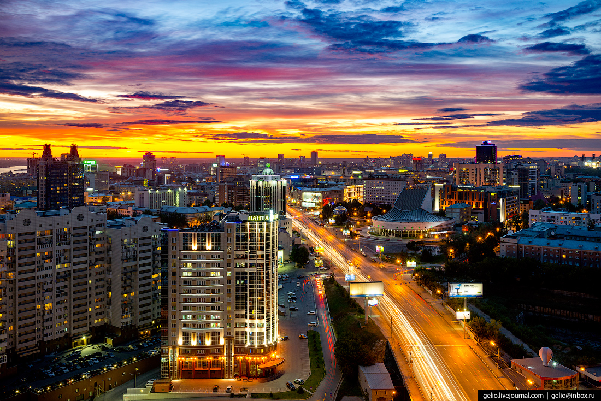

Экологические мероприятия
в Новосибирске
Новосибирск является третьим городом России по количеству проживаемого в нем населения, а также 12-м по своей площади, обладает статусом городского округа. Выступает административным центром Новосибирской области (и всего Новосибирского района), а также Сибирского федерального округа. Помимо этого, Новосибирск представляет из себя центр Новосибирской агломерации (которая является одной из самых крупных в Сибири). Был основан в 1893 году, но статус города обрел лишь в 1903-м. Является торговым, культурным, деловым, транспортным, промышленным, а также научным центром федерального значения. На 2015 год количество проживающих в нем жителей составляет 1 618 039 человек.
Экологическое положение в атмосфере
Автотранспорт
Название карточки
Название карточки
Название карточки
Название карточки
Автотранспорт
Больше всего на уровень загрязнения в городе влияет автотранспорт. Из самых опасных веществ мутагенного и канцерогенного характера, которые проникают в атмосферу по причине большого количества автомобилей, можно назвать формальдегид, бензапирен, а также окись азота и оксид углерода.
Метеорологическое загрязнение
Также экологическое положение Новосибирска, равно как и прочих больших городов, находится в зависимости не только от выбрасываемых в воздух вредных веществ, но и от различных неблагоприятных метеорологических факторов, таких как штили, температурные инверсии, а также туманы (которые располагают к накоплению вредоносных веществ в приземном слое атмосферы). В общем, рассеивающие способности атмосферы в Новосибирске гораздо лучше, чем, к примеру, в Восточной Сибири или на Кузбассе, но они все же не достигают надлежащего уровня, который наблюдается в европейской части России, по этой причине в городе повышен метеорологический потенциал загрязнения.
Состояние водоемов
Участок Оби,который начинается от Барнаула и протягивается до Новосибирского водохранилища, отличается повышенным уровнем загрязнения. Новосибирское водохранилище, которое представляет из себя водоем, отличающийся высокой способностью к самоочищению, принимает загрязненную воду с Алтайского края и улучшает ее уровень до средне загрязненной. Можно наблюдать явную недостачу водоохранных объектов. Река Обь выступает главным источником, который снабжает город водой.Каждый год из нее расходуется 700 миллионов квадратных метров на нужды населения.
Радиоактивная ситуация в городе
Радиационное загрязнение города техногенного характера образовывалось в 40-50-е года прошлого века. Его причинами является деятельность
различных предприятий, а также институтов, которые развивают атомную промышленность. Часть предприятий на сегодняшний день уже прекратила свою работу,
однако до сих пор можно наблюдать последствия от их деятельности.
К примеру, были обнаружены 217 зон во всех районах Новосибирска, в которых
повышен уровень радиации. Больше всего зон с радиоактивным загрязнением окружающей среды находится в Калининском районе (131 зона),
здесь же располагается завод химконцентратов.
Постоянно проводятся различные работы по утилизации повышенного уровня радиации в городе.
В общем, на данный временной момент радиоактивное положение Новосибирска не такое плохое, как было раньше, но все же есть необходимость в проведении
регулярных мероприятий, которые бы обеспечивали радиационную безопасность в городе.
Промышленные предприятия города l
Новосибирск по своей промышленности выступает одним из самых больших центров Сибири. Приблизительно 20% всей машиностроительной техники изготовляют предприятия города и его области. Особо выделяются среди них обрабатывающие дерево и металл станки. Также активно развивается цветная и электроэнергетическая металлургия.
Экологическая ситуация в некоторых районах Новосибирска
Согласно плановым пробам, которые проводились от Западно-Сибирского центра мониторинга окружающей среды в реке Каменке (расположенной в Центральном районе)
наблюдается повышенный уровень загрязнения. Так, в ее водах намного превышают норму показатели сульфидов, сероводорода, аммонийного азота.
Два первых загрязнителя в основном образуются по причине промышленных стоков. Также из-за масштабного загрязнения органикой реки в ее водах отмечено очень
низкое количество растворенного кислорода.
Ветра в Новосибирске имеют юго-западное направление, что приводит к переносу загрязнений из Ленинского и Кировского
районов в Заельцовский и Центральный. В Центральном районе по результатам наблюдений отмечается повышенное содержание в воздухе диоксида азота,
а также формальдегида и диоксида углерода.
В городе есть два крупных зеленых массива, они располагаются в Советском и Заельцовском районах.
Они способствуют обеспечению города свежим воздухом. Однако здесь иногда можно наблюдать ситуацию с массовой вырубкой деревьев, хотя в последнее
время это встречается довольно редко. Заельцовский бор выступает фактически легкими Новосибирска, это одна из важнейших природных зон.
Согласно ряду исследований воздух, который очищается в Заельцовском районе, затем доходит до центра города и снабжает кислородом область вплоть до Октябрьского
района.
Также необходимо сказать, что вторым легким города выступает Советский район, который на данный момент времени также активно занимается сохранением
своих зеленых зон. К примеру, сейчас формируется специальная охраняемая природная зона, которая будет располагаться посередине от Академгородского
и Бердского шоссе.
По всему городу систематически проводятся различные мероприятия, а также акции, целью которых является очистка водоемов,
а также зеленых зон и поддержание их в надлежащем состоянии. Для этого привлекаются разные общественные учреждения, организации и предприятия,
также активное участие в данном процессе принимает администрация районов Новосибирска. Проводятся субботники по всем районам города, связанные с уборкой мусора
и благоустройством парков, дворов, скверов. С целью очистки прибрежной территории реки Каменки, которая протекает по Дзержинскому району, производится сбор,
вывоз, а также утилизация мусора с улиц, располагающихся в береговой зоне.
Также проводилась акция по утилизации мусора с территории реки Оби.
5 июня 2014 года проходил экологический фестиваль, когда от мусора была очищена прибрежная зона, а также пляж озера под названием Юго-Западное в Ленинском районе.
Также областной администрацией была принята программа, согласно которой должны систематически проводиться мероприятия:
- по улучшению состояния атмосферы;
- охране и грамотному использованию водных ресурсов;
- охране окружающей среды от отходов потребления и производства;
- постоянному отслеживанию состояния
окружающей среды;
- по озеленению города, а также воспроизведению лесов, находящихся в городской зоне;
- обеспечению радиологической безопасности населения.
Проводятся на данный момент времени с целью нормализации экологического положения по городу (а также необходимо их проводить в будущем) следующие мероприятия:
- По максимальному уменьшению неблагоприятного воздействия на экологию города (прежде всего исходящего от объектов коммунального хозяйства,
а также от теплоэнергетических объектов).
- Улучшению централизованных систем водоотведения и теплоснабжения, возможно, перевод некоторых тепловых источников
на газ, также закрытие малоэффективных источники тепла, которые способны причинять вред окружающей среде.
- Уменьшению вредного воздействия автомобилей,
внедрению экологически безопасных разновидности моторного топлива, контролю технического состояния транспорта.
- Очищению и благоустройству водоохранных зон,
а также прибрежных полос, с этой целью необходимо бороться с незаконными мусорными свалками, а также совершенствовать систему озеленения территорий
и усиливать их рекреационные свойства.
Название карточки
Название карточки
Название карточки
Название карточки
Название карточки
Название карточки
Название карточки
Название карточки
Название карточки
Если придерживаться простых правил, экологическое положение Новосибирска будет меняться в лучшую сторону,
что поможет значительным образом улучшить качество жизни местных горожан и снизить количество заболеваний, которые возникают по причине загрязненной
окружающей среды.